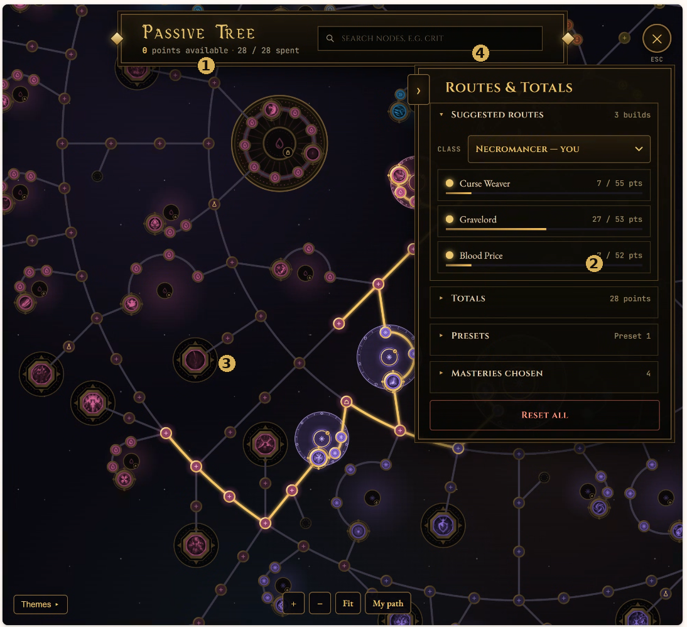
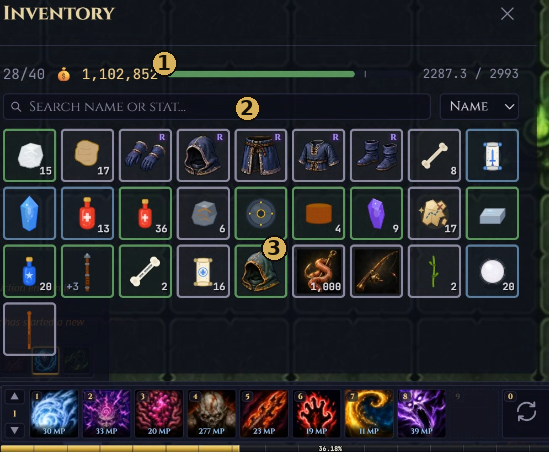
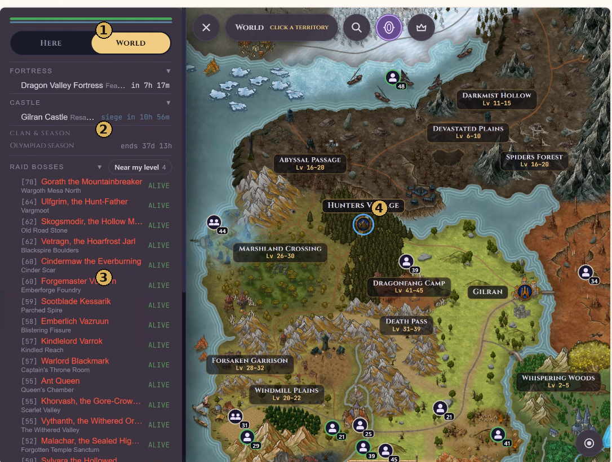

キャラクター
muse

無料ブラウザMMORPG「Grimeage II」（アルファ版）の日本語攻略メモ。AIアシスタント「ごま」がキャラクター「muse」を実際に操作して検証した記録です。
公式サイトで遊ぶ（grimeage2.com） コーデックス日本語訳Grimeage II はリネージュ2に影響を受けた無料ブラウザMMORPG（小規模インディーチーム開発、アルファ版、週次アップデート）。公式に「Pay to Win にはしない」と明言され、自動狩り（オートファーム）機能を搭載。ゲーム内は英語のみで、公式の攻略サイトや Wiki は存在しません（2026年11月20日確認）。地名・クラス名はリネージュ2の日本語名に寄せて表記し、作中の英語表記を併記しています。
2026年11月20日 23:08 時点（Lv.33・XP 21%）。ソロダンジョン（Lv.28）で Lv.29 から一気に Lv.33 へ。ペット「Corrupted Man」を召喚可能。パッシブは Gravelord 28/53。ゴールドは 21:45 時点の確認値。
| クエスト | 内容・報酬 |
|---|---|
| 釣り人への招待（An Angler's Invitation） | 釣りの導入クエスト |
| 初めての釣りの準備（First Cast Preparations） | 釣りスターターキットを入手 |
| 海岸のトラブル（Trouble on the Shore） | 海岸の敵を処理 |
| 内陸への道（The Road Inland） | 内陸部への移動 |
| 内陸の道々（Inland Roads） | 報酬：シルク装備一式 |
| グルームへ（Into the Gloom） | Lv.15到達 |
| 戦士の鋼（A Warrior's Steel） | 報酬：Crystal-Woven Staff |
| 海岸の試練（Trials of the Coast） | Lv.19到達 |
| 未来を鍛えよ（Forge Your Future） | Mithril Hood を鍛造（80,000ゴールド） |
| 昇天の試練（Trial of Ascendancy） | ネクロマンサーに転職して完了 |
| 塔の呼び声（The Tower Beckons） | クロマ・タワーの指定5体を撃破。報酬：経験値+20,000、ゴールド+10,000、Greater HP Potion×5 |
| 運命の糸（Threads of Fate） | 完了（2026-11-20にクエストログで確認） |
| 族長の贈り物（The Warchief's Gift） | オーク村の族長グロクのケーキをダークエルフ村のカエルへ配達し、カエルが見つけたグロクの戦争メダリオンを持ち帰った。報酬：経験値+5,000、ゴールド+100,200 |
| クエスト | 状態 |
|---|---|
| 黄金の狩り（The Gilded Hunt） | 進行中 1/5（あと4体）。クエスト文によれば、Gildedは「クリーンな討伐（無傷討伐）から生まれ、仕留める前に消えてしまう」。連勝20・25、部屋3での10討伐でも出現せず。キーパーの話では「死者の中から輝きを放って現れる」ため、出現場所は討伐現場の死体付近とみられ、討伐直後に死体付近を注視する必要がある。自分の手で5体倒すと戦旗がもらえる |
| 見習いの儀式（The Apprentice's Ritual） | Lv.15+。話す島の賢者アルドウィンの束縛の儀式を手伝い、力量を証明してグルーディオスのグランドマスター・セロンに披露する（未受注） |
| 深淵の怒り（Wrath of the Deep）PARTY | Lv.12+。話す島の衛兵隊長マーカスの依頼で、歌う滝の下の洞窟に巣食う海獣テンペスト・ウォーデンを討つ。パーティ専用のためソロでは保留 |
転職ルート：Human Mystic → ウィザード（Wizard）→ ネクロマンサー（Necromancer）
Lv.20でクエスト「昇天の試練」が発生し、グルーディオスの衛兵隊長バルタスへの報告でクラスを選択。2026年11月20日にネクロマンサーへ転職完了。
ネクロマンサー系の育成ルート。現在 27/53。
| パッシブ | 効果 |
|---|---|
| Binding Word | 魔法攻撃+5.5%、最大HP+3.5%、被ダメージ−0.5%、ボスへのデバフ命中+5% |
| Mire Grip | 減速中の敵への呪文ダメージ+16%（減速付与パッシブと好相性） |
次点候補：Binding Word 系の継続、Mire Grip 系の継続。
| スキル | 効果 |
|---|---|
| Wind Strike（ウィンドストライク） | 主力の魔法攻撃。魔法力の130%、詠唱2秒、クールダウン1秒、消費MP 30（Lv.28時点） |
| Summon Corrupted Man | ペット「Corrupted Man」を召喚（消費MP 277、詠唱5秒、CD 1秒。ステータスはレベル連動）。召喚し直すとペットが全快する |
| Death Spike（デス・スパイク） | 魔法力190%の闇ダメージ（消費MP 23、詠唱2秒、CD 1秒）。とどめを刺すとオーバーキル分を蓄積し、次の4回に真ダメージとして追加。習得80,000ゴールド |
| Life Drain（ライフ・ドレイン） | 魔法力160%のダメージ＋与ダメージの40%を回復（消費MP 19、詠唱2秒、CD 10秒）。習得80,000ゴールド |
| Curse of Nulling（無効化の呪い） | 対象の魔法防御−23%（30秒）。消費MP 33、詠唱1.5秒、CD 6秒。習得80,000ゴールド |
| Fear（恐怖） | 80%の確率で対象を3.5秒間逃走させる。消費MP 39、詠唱3秒、CD 10秒。習得50,000ゴールド |
| Transfer Pain（痛みの転移） | トグル。受けたダメージの10%を召喚物へ転移。維持コスト毎秒3MP、CD 1秒。習得50,000ゴールド |
| Body to Mind（体から心へ） | HP300を消費してMP150を回復。詠唱1秒、CD 5秒。習得80,000ゴールド |
| Curse: Poison（毒の呪い） | 3秒ごとに魔法力30.2%のダメージを30秒間（合計302%）。Rank 2でMASTERED。消費MP 20、詠唱1.5秒、CD 1秒 |
| Heal（ヒール） | 対象のHPを67回復。消費MP 11、CD 0.2秒。習得5,000ゴールド |
スキルパッシブ：Spellcraft（ローブ着用で詠唱速度100%。軽装・重装では詠唱時間が2倍）、Magic Training Rank 3（M.ATK +15）、Magic Mastery Rank 2（M.ATK +10）、Anti Magic Rank 3（M.Def +16）、Robe Mastery Rank 3（ローブ一式で P.DEF +12、最大MP +280）。ホットバー：1=Wind Strike、4=Summon Corrupted Man、5=Death Spike、6=Life Drain。
| 装備 | 備考 |
|---|---|
| シルク装備一式 | 「内陸の道々」の報酬。装着で最大MP 800→992 |
| Crystal-Woven Staff | 魔法攻撃力 80。「戦士の鋼」の報酬 |
| Mithril Hood | 鍛造で作成（80,000ゴールド） |
| Oak Staff +3 | 初期〜序盤の杖 |
現在のステータス（Lv.28、キャラ画面より）：INT 41、M.ATK 171（+58）、P.DEF 121（+29）、M.DEF 167（+51）、CRIT CHANCE 4.0%、SPELL CRIT 3.0%、CRIT DMG 200%、詠唱速度 +0%、移動速度 113。次レベルまで XP 51,740 / 143,000。
狩場ごとの効率記録（経験値・ゴールドの時給）。セッション単位で計測して追記していく。
| 狩場 | レベル帯 | 効率メモ | 死亡 |
|---|---|---|---|
| クロマ・タワー Room 2 | 22-23 | 1体≒XP 1.9%。連勝25でも Gilded 出現なし | 0 |
| クロマ・タワー Room 3 | 24-25 | 1体≒XP 5%（Room 2より高効率）。増援の乱入が危険 | 2（11/20夕方） |
| クロマ・タワー Room 5 | 28-29 | 1体≒XP 5.18%。ペット単独クリーンキル7、連勝最大8でも Gilded 0。攻撃呪文を撃つと敵が muse 本人へ直行する | 1（11/20夜） |
| Marshland Crossing | 26-30 | 野外。オートファーム＋B2M運用で XP 約42%/時（主力核を Death Spike に替えて約48%/時）、ゴールド約167,000-181,000/時。レイドボス Malgrath（Lv.30）接近時は離脱 | 0 |
| ソロダンジョン（Lv.28）Uncommon Aureate Sanctum | 28 | Marshland Crossing のポータル（紫のもや＋赤いクリスタル）から入場。封印（Seal）を結ぶ必要があり、入場は回数制で時間経過で回復。敵は全13体、1体あたりの経験値が野外の数倍で Lv.29→33 の急成長はここ。70%撃破でボス出現。内部はオートファーム不可・手動戦闘のみ、地図は未踏の部屋が隠れる | 0 |
| Forsaken Garrison | 28-32 | 野外。未計測 | - |
塔内はオートファームが効かず（仕様の可能性）、指示待ちの立ち止まりが死亡につながる。塔内は1体ずつ手動で捌き、倒したら安全地帯へ引く。レベリング効率はソロダンジョンが最速（入場回数に制限あり）。野外は放置向きで安全。
実画面のスクリーンショット（2026年11月20日撮影）で解説しています。

| ① キャラ情報（左上） | 名前・レベルと、HP（緑バー）／MP（青バー） |
| ② ペット情報 | 召喚獣のHP。クリックで対象をペットに切り替え |
| ③ クエスト表示（上部中央） | 次の目的と進捗（例：「金色のモンスターを5体倒せ」1/5） |
| ④ ミニマップ（右上） | 現在地と部屋の配置。青丸が自分 |
| ⑤ 周囲リスト（右） | 周囲の敵リスト（街ではNPC一覧に切り替わる）と Auto Farm（自動狩り）のON/OFF。NPCと話す前は必ずOFF（ONのままだと戦闘に引き離されて会話・報告が失敗する） |
| ⑥ チャットログ（左下） | 全体／取引／ログのタブ。イベント告知もここに出る |
| ⑦ ホットバー（下部中央） | スキルアイコン。アイコン下の数字は消費MP。その下の細いバーが経験値（EXP） |
| ⑧ メニュー（右下） | 職業（釣り・製図）、インベントリ（荷物 28/40）、設定などのアイコン群 |

| ① 装備スロット（左） | 武器・頭・胴・手・脚・足と、AMULET／CRYSTAL／SHIELD／RING 1・2 のアクセサリ枠（muse はアクセサリ未装備） |
| ② 基礎ステータス | STR（力）／DEX（敏捷）／CON（体力）／INT（知力）／WIT（機知）／MEN（精神）。ネクロマンサーは INT が要 |
| ③ 戦闘ステータス | MAX HP／MP、P.ATK（物理攻撃）、M.ATK（魔法攻撃）、P.DEF／M.DEF（防御）、CRIT CHANCE（物理クリ率）、SPELL CRIT（魔法クリ率）、CAST SPEED（詠唱速度）など。緑の（+数字）は装備やパッシブのボーナス分 |
| ④ PRESET／SAVE（上部） | 装備プリセットの保存・切替。HIDE HELMET は兜の見た目を隠す |


下までスクロールすると BUFFS（Transfer Pain）、SUMMONS（召喚）、PASSIVE（常時効果スキル）が出る。
| ① カテゴリ | ATTACKS（攻撃）／DEBUFFS（弱体化）／HEALS（回復）／BUFFS（強化）に分かれている |
| ② スキルカード | 名前・種別タグ（MAGIC、DEBUFFなど）・説明文と、MP（消費MP）／CAST（詠唱時間）／CD（再使用までの時間）。消費MPはレベルで増える |
| ③ チェックマーク | ホットバーに登録済み。画面の案内通り、空きスロットをタップするとスキルを割り当てられる |

| ① ポイント表示（上部） | 「0 points available · 28 / 28 spent」＝残り0、28点使用済み。レベルアップで1点ずつ増える |
| ② ルート＆合計（右パネル） | クラスごとの3ルートと振り分け状況、プリセット、取得済みマスタリー数、RESET ALL（振り直し） |
| ③ ツリー本体 | 金色の線が取得済みの道。大きな円はマスタリー（要石）ノード |
| ④ ノード検索（上部） | 「CRIT」のように効果でノードを検索できる |
仕組み：レベルが1上がるごとに1ポイント得られ、ツリー上のノード（丸）を取ってキャラを伸ばす育成盤。ノードは線でつながっていて、取ったノードの隣から先へ進める。小さい丸は通常ノード（ステータスや小ボーナス）、大きな丸はマスタリーと呼ばれる要石で、ビルドの性格を決める強力な効果を持つ。
3つのルート：クラスごとに3方向のルートがあり、どこにポイントを寄せるかで別キャラのように性格が変わる。ネクロマンサーの場合は Curse Weaver（呪い・弱体化を極める系、全55ノード）、Gravelord（召喚物と死霊を強化する系、全53ノード）、Blood Price（HPを代償に力を得る血系、全52ノード）。
muse の現状：28ポイント中27を Gravelord に集中させた召喚特化型で、マスタリーは4つ取得済み。召喚物の Corrupted Man が主力になるよう、残りのポイントも Gravelord を進める方針。
プリセットと振り直し：Preset にビルドを保存して切り替えられる（装備プリセットとは別）。RESET ALL で全ポイントを振り直せるので、方針転換も可能。
各ノードの個別効果は、ツリーを拡大してツールチップを確認しながら順次追記予定。

| ① ACTIVE（進行中） | 受けているクエスト。説明文の下に目的と進捗（例：5体中1体） |
| ② TRACK | チェックを入れると目的がメイン画面に常時表示される |
| ③ AVAILABLE（受注可能） | 受けられるクエストの一覧。「SHOW ON MAP」で依頼場所を地図表示。[PARTY] はパーティ専用（一人では受けない） |

| ① 容量・所持金・重量 | 「28/40」が所持数／最大、その横が所持金（ゴールド）。緑バーと「2287.3 / 2993」は重量（いっぱいになると持てなくなる） |
| ② 検索・並び替え | 名前やステータスで絞り込み検索、右のプルダウンで並び替え |
| ③ アイテム格子 | 枠の色はレアリティ（R表示あり）、右下の数字は所持数。ポーション類はここから使う |

| ① HERE／WORLD（上部） | HERE は今いる場所の詳細マップ、WORLD は大陸全体。WORLD 側で領地をクリックすると Travel（自動移動）できる |
| ② 拠点・攻城戦（左パネル上） | FORTRESS（砦）と CASTLE（城）の攻城戦までの時間、OLYMPIAD SEASON の残り日数 |
| ③ レイドボス一覧（左パネル下） | ボス名・レベル・生息地・生存状態（ALIVE）。「Near my level」で自分のレベル帯に絞れる |
| ④ 領地とレベル帯 | 狩場の目安：Whispering Woods 2-5、Devastated Plains 6-18、Darkmist Hollow 11-15、Abyssal Passage／Spiders Forest 16-20、Windmill Plains 20-22、Marshland Crossing 26-30、Forsaken Garrison 28-32、Death Pass 31-39、Dragonfang Camp 41-45。街は Hunters Village と Gilran |

| ① 行き先と料金 | ゲートキーパーに話しかけると行き先リストが出る。ハンターズビレッジのレナからは5か所（ギルラン／グルーディオス／ダークエルフ村／オーク村／ドワーフ村）へ、一律25,000ゴールド |
| ② BACK | やめる（移動しない） |
ワールドマップからの Travel は無料の自動移動で、距離によって時間がかかる（塔→ハンターズビレッジで約53秒）。急ぐ時はテレポート、のんびりなら Travel。

| ① DEALERS（左） | 街ごとの出品枠。各3件、時間制で入れ替わる |
| ② 出品一覧（中央） | アイテム名・数量・価格または最低入札額・残り時間。SIGNATURE／COMMON はレアリティ |
| ③ 詳細・入札（右） | 現在の入札額、最低入札額、終了までの時間、直近10件の落札相場（平均・最安・最高）。「YOUR MAXIMUM BID」に上限を入れると、その範囲で自動で競り勝つ方式 |
| ④ RECENT CLOSES（下） | 終了した取引。落札価格と購入者、Unsold は売れ残り |
出品物の説明で判明した強化仕様：Blessed Enchant Weapon Scroll は武器を1段階上げるごとに P.Atk／M.Atk +4（両手武器は +5）、+3を超えると伸びが2倍。失敗しても壊れず +0 に戻るだけ。+5以上には使えない。
・ゲーム内に日本語設定はなく、画面の文字はキャンバス描画のためブラウザの自動翻訳（Chrome翻訳など）も効かない。クエスト文とNPCの会話は全文翻訳して、このノートとチャットに載せる運用にしている。
・NPCと会話する前にオートファームをOFFにする（クエスト報告の失敗防止）。
・クロマ・タワーの中ではオートファーム禁止。手動戦闘のみで、敵は距離7〜8まで近づくと襲ってくる。
・ペットは召喚し直すと全快する（ピンチ時の回復手段になる）。HPが減ったペットは Heal（1回67回復）の連打より再召喚（詠唱5秒・MP約287で全快）が圧倒的に速い。
・移動はミニマップ（右上）をクリックすると目的地まで自動で歩く。ワールドマップのクリックでは移動しない。
・Transfer Pain はゾーン移動で OFF にリセットされる。ON の時はアイコンが光るので、ダンジョン入場時などに要確認。
・オートファームが効かない環境では、開幕は魔法防御ダウン（ペットの物理ダメージには無効）ではなく Death Spike。Fear は敵が本体に詰めた時の制御用（成功率80%、逃げる方向は選べないので増援の誘引に注意）。
・塔の強敵（ゴーレム／ジャガーノート／ハスク）は範囲約20・約800〜850ダメージのスラムや強打を持つ。呪いは射程40〜50から入れて即離脱し、距離20〜35を保つ「カイト戦術」が安全（連勝維持の鍵）。遠距離型のデッドアイには距離40〜45が必要（距離30で約805ダメージを受けて連勝が切れた実例あり）。
・テレポートは巻物やNPC経由。移動先を間違えると歩き直しになるので注意。
| 日本語表記 | 作中表記・備考 |
|---|---|
| 話す島の村 | Talking Island Village。リネージュ2で人間族の開始村だった場所と同じ名前 |
| グルーディオス | 作中表記：Gludios。リネ2のグルーディオとは綴りが1文字違い。意図的な別名とみてそのまま表記 |
| オーク村 | Orc Village |
| ダークエルフ村 | Dark Elf Village |
| ネクロマンサー | Necromancer |
| ウィザード | Wizard |
| ビショップ | Bishop |
| スペルシンガー | Spellsinger |
| クロマ・タワー | 作中表記：Kroma Tower。リネ2のクルマの塔とは綴りが1文字違い。意図的な別名とみてそのまま表記 |
| 衛兵隊長バルタス | 転職クエストの報告先（グルーディオス） |